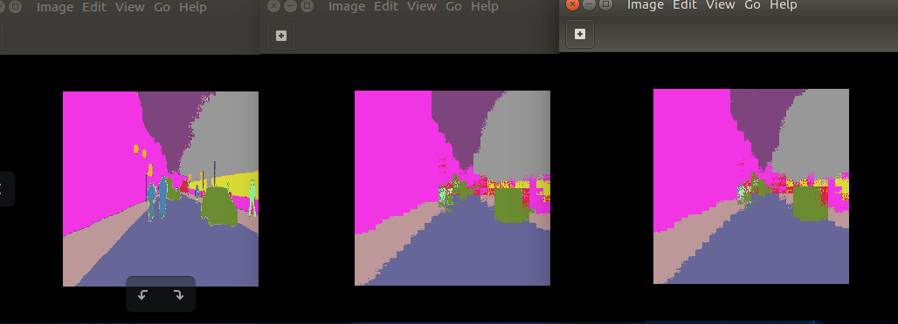

FCN8 and UNET Semantic Segmentation with Keras and Xilinx Vitis AI |
|---|
Current status¶
Tested with Vitis AI 1.3.
Fully working in hardware on ZCU102. It should work also on ZCU104.
In hardware on VCK190 only FCN8 works fine.
Date: 8 Jan 2021¶
1 Introduction¶
In this Deep Learning (DL) tutorial, you will train the FCN8 and UNET Convolutional Neural Networks (CNNs) for Semantic Segmentation in Keras adopting a small custom dataset, then you will quantize the floating point weights files to an 8-bit fixed point representation to finally deploy them on the Xilinx® target board using Vitis™ AI, which is a set of optimized IP, tools libraries, models and example designs valid for AI inference on both Xilinx edge devices and Alveo cards. See the Vitis AI Product Page for more information.
Once the selected CNN has been correctly trained in Keras, the HDF5 file of weights is converted into a TF checkpoint and inference graph file, such frozen graph is then quantized by the Vitis AI Quantizer that creates an INT8 pb file from which the Vitis AI Compiler generates the xmodel file of micro instructions for the Deep Processor Unit (DPU) of the Vitis AI platform. The final application is executed at run time - via Python APIs - on the target board to make predictions that can be compared against the simulation reference results.
2 Prerequisites¶
Ubuntu 16.04 host PC with Python 3.6.
The entire repository of Vitis AI stack release 1.3 from www.github.com/Xilinx.
Accurate reading of Vitis AI User Guide UG1414 v1.3. In particular:
“Vitis AI Overview” in Chapter 1 with DPU naming and guidelines to download the tools container available from docker hub and the Runtime Package for edge (MPSoC) devices.
“Installation and Setup” instructions of Chapter 2 for both host and target;
“Quantizing the Model” in Chapter 4 and “Compiling the Model” in Chapter 5.
“Programming with VART” APIs in Chapter 6.
A Vitis AI Evaluation board such as the ZCU102 with its image file, which contains a pre-built working design for the ZCU102 with the DPUCZDX8G (renamed shortly as “DPUv2” in the following).
Familiarity with Deep Learning principles.
Dos-to-Unix Conversion¶
In case you might get some strange errors during the execution of the scripts, you have to pre-process -just once- all the*.sh shell and the python *.py scripts with the dos2unix utility.
In that case run the following commands from your Ubuntu host PC (out of the Vitis AI docker images):
sudo apt-get install dos2unix
cd <WRK_DIR> #your working directory
for file in $(find . -name "*.sh"); do
dos2unix ${file}
done
Vitis AI 1.2¶
If you need to use the older Vitis AI 1.2 release, just replace this README.md file with the one placed in the subfolder
vai_1v2 and go on in following the instructions on that file and the related vai_1v2.zip archive, then skip the rest of this document.
3 Before starting with Vitis AI 1.3¶
In the following of this document, it is assumed that you have cloned the Vitis AI stack release 1.3 in your working directory <WRK_DIR>, for example a folder named ~/ML/VAI1v3.
It is also assumed that your target board is called just “TARGET”, once not specified in more details.
To list the currently available docker images run:
docker images # to list the current docker images available in the host pc
and you should see something like in the following text:
REPOSITORY TAG IMAGE ID CREATED SIZE
xilinx/vitis-ai-gpu 1.3 f42fb3515bcd About an hour ago 27.5GB
To launch the docker container with Vitis AI tools, based on CPU (or GPU), execute the following commands from the <WRK_DIR> folder:
cd <WRK_DIR> # you are now in Vitis_AI subfolder
./docker_run.sh xilinx/vitis-ai-gpu:1.3
Note that the container maps the shared folder /workspace with the file system of the Host PC from where you launch the above command, which is <WRK_DIR> in your case.
This shared folder enables you to transfer files from the Host PC to the docker container and vice versa.
The docker container do not have any graphic editor, so it is recommended that you work with two terminals and you point to the same folder, in one terminal you use the docker container commands and in the other terminal you open any graphic editor you like.
Note that docker does not have an automatic garbage collection system as of now. You can use this command to do a manual garbage collection:
docker rmi -f $(docker images -f "dangling=true" -q)
Starting from Vitis AI 1.1 release there is no more Docker Runtime Container, and you can cross compile the application files directly from the Xilinx petalinux_sdk environment on your host PC to the target board.
In the following of this tutorial it is assumed that petalinux_sdk is installed into ~/petalinux_sdk of your host PC, as recommended in UG1414.
3.1 Install Missing Packages on the Vitis AI Tools Container¶
This tutorial requires some packages that were not included in the original Vitis AI tools container. Here are the commands to include such packages:
./docker_run.sh xilinx/vitis-ai-gpu:1.3
sudo su # you must be root
conda activate vitis-ai-tensorflow # as root, enter into Vitis AI TF (anaconda-based) virtual environment
conda install seaborn
conda deactivate
exit # to exit from root
conda activate vitis-ai-tensorflow # as normal user, enter into Vitis AI TF (anaconda-based) virtual environment
Note that if you exit from the current Docker Vitis AI tools image you will lose all the installed packages, so to save all changes in a new docker image open a new terminal and run the following commands:
sudo docker ps -l # To get the Docker CONTAINER ID
you will see the following text (the container ID might have a different number):
CONTAINER ID IMAGE COMMAND CREATED STATUS PORTS NAMES
967212b35a06 xilinx/vitis-ai-gpu:1.3 "bash" 5 minutes ago Up 5 minutes admiring_minsky
now save the modified docker image:
sudo docker commit -m"comment" 7c9927375b06 xilinx/vitis-ai-gpu:1.3
Assuming you have renamed this project VAI-KERAS-FCN8-SEMSEG and placed it in the directory named <WRK_DIR>/tutorials/ so that it is two levels below the <WRK_DIR> folder, you can launch the modified tools container by running the following commands:
cd <WRK_DIR>
./docker_run.sh xilinx/vitis-ai-gpu:latest
cd /workspace/tutorials/VAI-KERAS-FCN8-SEMSEG
conda activate vitis-ai-tensorflow
4 The Main Flow¶
The main flow is composed of seven major steps. The first six steps are executed from the tools container on the host PC by launching one of the scripts run_fcn8.sh or run_fcn8ups.sh or run_unet.sh -respectively for FCN8, FCN8UPS (a custom, modified version of FCN8) and UNET CNNs- with commands:
source run_fcn8.sh # FCN8 CNN
source run_fcn8ups.sh # FCN8UPS CNN
source run_unet.sh # UNET CNN
The seventh step can be executed either directly on the target board or in your petalinux_sdk cross-compilation host environment.
Here is an overview of each step.
For each dataset, organize the data into proper folders, such as
train(for training),val(for validation during the training phase),test(for testing during the inference/prediction phase) andcalib(for calibration during the quantization phase). See Organize the Data for more information.Train the CNNs in Keras and generate the HDF5 weights model. See Train the CNN for more information.
Convert the Keras model into TF checkpoint and inference graph. See Create TF Inference Graphs from Keras Models for more information.
Freeze the TF graph to evaluate the CNN prediction accuracy as the reference starting point. See Freeze the TF Graphs for more information.
Quantize from 32-bit floating point to 8-bit fixed point and evaluate the prediction accuracy of the quantized CNN. See Quantize the Frozen Graphs for more information.
Run the compiler to generate the
xmodelfile for the target board from the quantizedpbfile. See Compile the Quantized Models for more information.Use either VART C++ or Python APIs to write the hybrid application for the ARM CPU, then cross-compile it in the
petalinux_sdkhost environment. The application is called “hybrid” because the ARM CPU is executing some software routines while the DPU hardware accelerator is running the FC, CONV, ReLU, and BN layers of the CNN that were coded in thexmodelfile.Assuming you have archived the
target_zcu102folder and transferred the relatedtarget_zcu102.tararchive from the host to the target board withscputility, now you can run the hybrid application. See Build and Run on the ZCU102 Target Board for more information.
:pushpin: NOTE Steps 1 and 2 are based on Yumi’s blog titled Learn about Fully Convolutional Networks for semantic segmentation. For more background information about Semantic Segmentation have a look at the Appendix.
4.1 Organize the Data¶
You have to download the data from here and save the file dataset1.zip (of size ~120MB) in the folder files at the same level of other sub-folders like code and log.
The subroutine 1_generate_images() within the script run_fcn8.sh calls the prepare_data.py python module and creates the sub-folders: img_train, img_valid, img_test, and img_calib that are located in the dataset1 directory and fills them with 311 images for training, 56 images for validation (taken from the images of the original training dataset), 101 images for testing (all the images of the original testing dataset), and 104 images for the calibration process (copied from the training images).
All the images are resized to 224x224x3 before being stored into their folders.
This tutorial applies only 12 classes in the dataset: “Sky”, “Wall”, “Pole”, “Road”, “Sidewalk”, “Vegetation”, “Sign”, “Fence”, “vehicle”, “Pedestrian”, “Bicyclist”, “miscellanea”; these classes are coded with the colors reported in Figure 2, which was generated with commented code from the fcn_config.py script.
The following two lines of code from prepare_data.py
cnn.plot_image_with_classes(dir_train_seg_inp, dir_train_img_inp)
cnn.plot_some_images(dir_train_seg_inp, dir_train_img_inp)
allow you to plot an image and its segmentation labels for each of the 12 classes (first line), and also to plot some examples of segmented images with their classes coded in colors (second line).


Figure 2: Examples of segmentation labels on the top. Colors (right) to encode the Segmentation Classes (left) on the bottom.
4.2 Train the CNN¶
The input data are pre-processed using the following python code to normalize their values from 0 to 1. Such code has to be mirrored in the C++ or Python application that runs in the ARM® CPU of ZCU102 target board.
x_train = x_train.astype("float32") / 127.5
x_test = x_test.astype("float32") / 127.5
x_train = x_train -1
x_test = x_test -1
4.2.1 FCN8 (two models)¶
This tutorial proposes two variances of FCN8:
the original model of Yumi’s blog -named FCN8- with the scheme illustrated in Figure 3 and with ~28 Millions of parameters,
my modified model -named FCN8UPS- with the scheme of Figure 4 and with ~15 Millions of parameters, where in the second model the first two
Conv2DTranslayers are replaced byUpSampling2Dlayers.
Both models include a VGG16 CNN backbone, you have to download the HDF5 weights file from fchollet’s GitHub and put it in the subfolder keras_model.
From the 2_fcn8_train() subroutine within the run_fcn8.sh script you can call the fcn8_training.py module with the flag either upscale="False" to get the original FCN8 model or upscale="True" to get the second model. All the related files and folders names will contain the substrings either fcn8 or fcn8ups respectively. Similarly, whatever FCN8 model you need, just use one of the two commands below to run the six steps of the deployment process from the host PC:
source run_fcn8.sh # original FCN8
#source run_fcn8ups.sh # FCN8 with UpSampling2D
Once the training is completed, the fcn8_make_predictions.py module makes predictions on both the test and validation datasets and you should get a Mean IoU accuracy respectively of 0.406 and 0.426, as reported in the logfile placed in log folder for the original FCN8 CNN, and 0.406 and 0.427 for the FCN8 with Upsampling2D (named FCN8UPS).
The learning curves are illustrated in Figure 5.
Note that, being the training dataset pretty small (only 311 images), the prediction accuracy is not very good (in that case it should be at least Mean IoU >= 0.5), as reported in the following text fragment of the logfile, in fact some classes are not even predicted (i.e. the classes 02, 06, 09 and 10). All in all the purpose of this tutorial is to show you what steps are needed to go from the .pb weight file of a trained FCN8 CNN to the run time execution on the FPGA device of the target board.
class ( 0) Sky: #TP= 431733, #FP= 23570, #FN= 24240, IoU=0.900
class ( 1) Wall: #TP=1097453, #FP= 108340, #FN= 206493, IoU=0.777
class ( 2) Pole: #TP= 3, #FP= 57, #FN= 36417, IoU=0.000
class ( 3) Road: #TP=1406806, #FP= 59897, #FN= 68213, IoU=0.917
class ( 4) Sidewalk: #TP= 399167, #FP= 104818, #FN= 49266, IoU=0.721
class ( 5) Vegetation: #TP= 786947, #FP= 108697, #FN= 39598, IoU=0.841
class ( 6) Sign: #TP= 3784, #FP= 2894, #FN= 49608, IoU=0.067
class ( 7) Fence: #TP= 54427, #FP= 40537, #FN= 101976, IoU=0.276
class ( 8) vehicle: #TP= 73622, #FP= 142380, #FN= 20438, IoU=0.311
class ( 9) Pedestrian: #TP= 44, #FP= 300, #FN= 36821, IoU=0.001
class (10) Bicyclist: #TP= 2057, #FP= 838, #FN= 108915, IoU=0.018
class (11) miscellanea: #TP= 39417, #FP= 179988, #FN= 30331, IoU=0.158
_________________
Mean IoU: 0.416

Figure 3: Block diagram of the original FCN8 CNN.

Figure 4: Block diagram of FCN8UPS CNN (with UpSampling2D replacing first two Conv2DTrans layers).


Figure 5: Training curves for FCN8UPS (top) and FCN8 (bottom) CNNs.
4.2.2 UNET (three models)¶
There are three variants of UNET, as proposed in the code/config/unet.py file. The complete process is managed by the script run_unet.sh, similarly to what done for the two FCN8 CNNs. Learning curves and block diagram of UNET-v2 model are illustrated in Figures 6 and 7.

Figure 6: Block diagram of a UNET-v2 CNN.

Figure 7: Training curves for a UNET-v2 CNN.
4.3 Create TF Inference Graphs from Keras Models¶
The subroutine 3_fcn8_Keras2TF() within the run_fcn8.sh script gets the computation graph of the TF backend representing the Keras model and generates the output files named infer_graph.pb and float_model.chkpt.* which are then placed in the folder ./workspace/tf_chkpts/fcn8. The generated logfile in the log folder also contains the TF names of the input and output nodes that are needed to Freeze the TF Graphs. For example, in the case of FCN8, such nodes are called input_1 and activation_1/truediv respectively.
4.4 Freeze the TF Graphs¶
The inference graph created in Create TF Inference Graphs from Keras Models is first converted to a GraphDef protocol buffer, then cleaned so that the subgraphs that are not necessary to compute the requested outputs, such as the training operations, can be removed. This process is called “freezing the graph”.
The subroutines 4a_fcn8_freeze() and 4b_fcn8_eval_graph() of run_fcn8.sh script generate the frozen graph and use it to evaluate the accuracy of the CNN by making predictions on the images in the img_test folder.
It is important to apply the correct input node and output node names in all the shell scripts. This information can be captured by this python code fragment:
# Check the input and output name
print ("\n TF input node name:")
print (model.inputs)
print ("\n TF output node name:")
print (model.outputs)
The frozen graphs evaluation with eval_graph.py generates a Mean IoU prediction accuracy of 0.406 and 0.406 for the first and second variant of FCN8 CNN, as reported in the logfile.
4.5 Quantize the Frozen Graphs¶
The subroutines 5a_fcn8_quantize() and 5b_fcn8_eval_quantized_graph() within the run_fcn8.sh script generate the quantized graph and use it to evaluate the accuracy of the CNN by making predictions on the images from the img_test folder.
The quantized graphs evaluation with eval_quantized_graph.py produces a Mean IoU prediction accuracy again of 0.407 and 0.404, for the first and second variant of FCN8 CNN, as reported respectively in the logfile.
The prediction accuracy of the quantized network can be evaluated by few changes to the original python module eval_graph.py illustrated in the following code fragment:
import tensorflow.contrib.decent_q
from tensorflow.python.platform import gfile
def softmax_predict(logits): #DB: added
prediction = tf.nn.softmax(logits, name='prediction')
return prediction
def graph_eval(input_graph_def, input_node, output_node):
#Reading images and segmentation labels
x_test, y_test = cnn.get_images_and_labels(IMG_TEST_DIR, SEG_TEST_DIR, cfg.NUM_CLASSES, cfg.WIDTH, cfg.HEIGHT)
# load graph
tf.import_graph_def(input_graph_def,name = '')
# Get input & output tensors
x = tf.compat.v1.get_default_graph().get_tensor_by_name(input_node+':0')
y = tf.compat.v1.get_default_graph().get_tensor_by_name(output_node+':0')
# Create the Computational graph
with tf.compat.v1.Session() as sess:
sess.run(tf.compat.v1.initializers.global_variables())
feed_dict={x: x_test}
#y_pred = sess.run(y, feed_dict) # original code
logits = sess.run(y, feed_dict) # new code
pred_DB = softmax_predict(logits) #new code
y_pred = pred_DB.eval() #new code
# Calculate intersection over union for each segmentation class
y_predi = np.argmax(y_pred, axis=3)
y_testi = np.argmax(y_test, axis=3)
cnn.IoU(y_testi,y_predi)
These changes are implemented into the new script called eval_quantized_graph.py.
Note that the output node names must be different, as illustrated by the below fragment of code in the run_fcn8.sh script:
OUTPUT_NODE="activation_1/truediv" # output node of floating point CNN
Q_OUTPUT_NODE="conv2d_transpose_2/conv2d_transpose" # output node of quantized CNN
This is due to the fact that the Softmax classifier layer has to be computed in software by the ARM CPU out of the DPU core.
In order to find the name of the output node, you have to use one of these two tools: either netron or tensorboard. The first has to be installed from your python virtual environment with the command pip install netron (I am using version 3.4.6), the second comes automatically with the TF release inside Vitis AI tools image.
For example, taking FCN8 as reference, run the open_pb_graph_in_tensorBoard.sh script with the following command to use tensorboard:
source open_pb_graph_in_tensorBoard.sh ./workspace/quantize_results/fcn8/quantize_eval_model.pb
and then with a browser you will see what illustrated in Figure 8.
Alternatively you can load the final graph ./workspace/quantize_results/fcn8/deploy_model.pb directly with netron and you will see in your browser what illustrated in Figure 9.

Figure 8: Final part of the FCN8 graph, as it appears in TensorBoard.

Figure 9: Final part of FCN8 graph, as it appears in Netron.
If you enable the following fragment of code from fcn8_make_predictions.py
#Visualize the model performance
cnn.visualize_model_performance(X_test, y_pred1_i, y_test1_i, N_CLASSES, UPSCALE)
you can visualize the predicted segmented images and so you can note the difference between the ideal (ground truth) segmented image (left) and the prediction from the floating point graph (centre) and from the quantized graph (right) as shown in Figure 10:

Figure 10: Segmentation comparison between ground truth (left), floating point model (centre) and quantized model (roght).
You will realize that the prediction is not really completely accurate and suffers a lot of “blocking” artifacts, due to the last layer which does an upscale of 8 in both directions, which is a limitation of FCN8 CNN architecture itself.
4.6 Compile the Quantized Models¶
The subroutine 6_compile_vai_zcu102() within the run_fcn8.sh script generates the xmodel file for the embedded system composed by the ARM CPU and the DPU accelerator in the ZCU102 board.
This file has to be loaded by the C++ application file main.cc at runtime, for example, in case of FCN8 and FCN8UPS the xmodel files are named respectively fcn8.xmodel and fcn8ups.xmodel.
If you use the Python VART APIs instead of the C++ APIs, to interact with the DPU core the first lines of the script app_mt.py must contain:
import vart
import xir
4.7 Build and Run on ZCU102 Target Board¶
In this design, you will use C++ to measure the performance in terms of fps and the Python APIs to get the prediction accuracy.
You have to cross-compile the hybrid (CPU + DPU) application from the host side (out of the docker tools image) with build_app.sh shell script:
unset LD_LIBRARY_PATH
sh ~/petalinux_sdk/2020.2/environment-setup-aarch64-xilinx-linux # set petalinux environment of Vitis AI 1.3
cd <WRK_DIR>/tutorials/VAI-KERAS-FCN8-SEMSEG/files
cd target_zcu102/code
bash -x ./build_app.sh
cd ..
tar -cvf target_zcu102.tar ./target_zcu102 # to be copied on the SD card
Note that a subset of the petalinux_sdk environment is also available directly on the SD card target board, so you can compile the application directly from there. In fact this is what the script run_all_target.sh indeed does, once you will launch it from the target board.
Assuming you have transferred the target_zcu102.tar archive from the host to the target board with the scp utility, you can now run the following command directly on the target board:
tar -xvf target_zcu102.tar
cd target_zcu102
bash ./run_all_target.sh
The purpose of run_all_target.sh shell script is
to extract the test images from the
test.tar.gzarchive;to launch the
app_mt.pyapplication based on VART Python APIs and measure the effective fps performance at run time;to run the C++ executable in order of creating images with segmentation results overlapped. Note that the code to compute the effective
Mean IoUprediction accuracy is still missing, but you should be easily derive it from the python scripts of the training process.
5 Accuracy & Performance results¶
The Mean IoU prediction accuracy evaluations of the floating-point and of the quantized frozen graphs can be compared to the INT8 post-quantization model and actual results obtained by the hardware model running on the ZCU102 board:
| Floating point | quantized model | Hardware model (INT8) | | :————-: | :——————-: | :——————-: | | 0.383 | 0.375 | 0.373 |
The approximate throughput (in frames/sec) for increasing number of threads is shown below:
| Threads | Throughput (fps) | | :——-: | :————–: | | 1 | 21.62 | | 2 | 41.09 | | 4 | 55.53 | | 6 | 55.28 |
6 Summary¶
In this tutorial you have seen how to implement on the Xilinx ZCU102 board some CNNs suitable for Semantic Segmentation with a small custom dataset of few hundreds of images taken from here.
Taking FCN8 CNN as an example, the Xilinx Vitis AI stack release 1.3 has quantized the ep200_trained_fcn8_224x224hdf5 32-bit floating point weights file (of ~224MB size) generated by the training process in Keras, into an 8-bit fixed point deploy_model.pb file (of ~112MB size) and such pb file is then transformed into the fcn8.xmodel (of ~65MB size) file for the DPU accelerator.
The advantage of this small dataset is that it makes the training process in Keras short enough, but the Mean IoU prediction accuracy is only ~0.38. To get a larger value you probably need a larger dataset, as the MS COCO or the Cityscapes, although this would probably need to re-architect the deepness of FCN8 to make it suitable to images of size 1920x1080, instead of 224x224 as in this case study.
Despite that, you have seen how easy is to control the DPU core from the embedded Linux Ubuntu OS on the ZC102 board via the DPU Python VART APIs with the app_mt.py script. The traditional C++ programming of the embedded system composed by the ARM CPU and the DPU accelerator is also available in the main.cc application file.
Appendix¶
A1 Semantic Segmentation Background¶
Image classification is the task of predicting labels or categories. Object detection is the task of predicting bounding boxes: each bounding box may have objects other than the detected object inside it. Semantic segmentation is the task of predicting pixelwise labels: for example the labels can be the sky, trees, persons, mountains, etc and are assigned to each pixel. The task of segmenting every instance with a different pixel-wise label (for example each person in a picture is labeled with a different value) is called instance segmentation.
The most adopted datasets in the latest years are PASCAL, Cityscapes and MS COCO. New algorithms are usually benchmarked against the MS COCO dataset. Creating training data for semantic segmentation is expensive as it requires proper CV tools for annotating the datasets.
Usually the decoded image is of the same size of the input.
Each pixel of the output of the CNN is compared with the corresponding pixel in the ground truth segmentation image (also called masks). Standard cross entropy loss is computed on each pixel. For the segmentation masks do not use jpg format being it lossy, use bmp or png instead.
The most adopted CNNs for semantic segmentation are:
FCN (Fully Convolutional Network): it is an Image classification CNN in which neither Max-Pooling nor Fully-Connected (FC) layers are used. For many applications, choosing a model pre-trained on ImageNet is the best choice, similarly to Transfer Learning, for example VGG could be converted to a FCN by making the last FC layers 1x1 Convolutions. The three variants are FCN8, FCN16 and FCN32. In FCN8 and FCN16, skip connections architecture is also adopted.
SegNet: tries to improve the FCN coarse outputs by using an encoder-decoder approach, with the encoder and decoder layers symmetrical to each other. The features are reduced in dimensions in the encoder stage via dilated convolution - also called strided convolution (it is a convolution with
stride >=2) - and then upsampled again in the decoder stage with either the transposed convolution - also called deconvolution or upconvolution - or the Max Unpooling (which uses positions from pooling layers). SegNet does not applies skip connections.UNet: this architecture adopts an encoder-decoder framework with skip connections. Like SegNet, the encoder and decoder layers are symmetrical to each other.
PSPNet: The Pyramid Scene Parsing Network is optimized to learn better global context representation of a scene. First, the image is passed to the base network to get a feature map. The the feature map is downsampled to different scales. Convolution is applied to the pooled feature maps. After that, all the feature maps are upsampled to a common scale and concatenated together. Finally a another convolution layer is used to produce the final segmentation outputs. Here, the smaller objects are captured well by the features pooled to a high resolution, whereas the large objects are captured by the features pooled to a smaller size.
Most of this section was based on R. Shanmugamani’s “Deep Learning for Computer Vision (Expert techniques to train advanced neural networks using TensorFlow and Keras)” book, 2018 Packt Publishing.
A1.1 Intersection over Union (IoU)¶
Both Semantic Segmentation and Object Detection measure the prediction accuracy in terms of “Intersection over Union” or IoU. You can read this nice IoU PyImageSearch tutorial to learn more about it.
A1.2 MS COCO dataset¶
The MS COCO dataset contains 91 object categories with 82 of them having more than 5000 labeled instances, as explained in this paper titled MicroSoft COCO: Common Objects in COntext.
The datasets can be downloaded here. The COCO API are available both in MATLAB and Python.
A1.3 Reference tutorials¶
There are some nice tutorials on Semantic Segmentation with Keras/TensorFlow, here are my preferred ones:
A Beginner’s guide to Deep Learning based Semantic Segmentation using Keras and related GitHub project files
PyImageSearch’ Semantic segmentation with OpenCV and deep learning
Semantic Segmentation of Small Data using Keras on an Azure Deep Learning Virtual Machine
A Non-Expert’s Guide to Image Segmentation Using Deep Neural Nets
http://www.immersivelimit.com/tutorials/create-coco-annotations-from-scratch
https://www.udemy.com/creating-coco-datasets/?couponCode=SUPPORTER
https://commecica.com/2018/07/18/starting-with-darknet-yolo-coco/
https://gluon-cv.mxnet.io/build/examples_datasets/mscoco.html
Learn about Fully Convolutional Networks for semantic segmentation
A2 Build and Run on VCK190 Target Board¶
Alternatively to ZCU102, you can also use the VCK190 and its following files, available only from the Versal ML EA Lounge (you need to be registered to it to get access to its content):
permissions | size (bytes) | filename
-rwxrwxrwx | 2397 | readme.txt
-rwxrwxrwx | 14868 | VCK190 Network Support List.xlsx
-rwxrwxrwx | 2264655516 | xilinx_model_zoo_vck190-1.3.0-r200-Linux.tar.gz
-rwxrwxrwx | 372211940 | xilinx-vck190-dpu-v2020.1-v1.3.0.img.gz
The xmodel files generated for VCK190 are necessarily different from the ones of ZCU102, because the DPU architecture of the first board is different from the DPU of the second board. No changes to the C++ or Python files are needed for these four CNN examples.
Working with VCK190 board requires just to adopt the 6_compile_vai_vck190() routine from the script run_fcn8.sh, instead of the 6_compile_vai_zcu102() which is related to ZCU102.
Make a tar file of the target_vck190 folder, copy it from the host PC to the target ZCU104 board. For example, in case of an Ubuntu PC, use the following command (assuming the board IP address is always the same):
scp target_vck190.tar root@192.168.1.100:/root/
cd target_vck190
source ./run_all_target.sh
The Mean IoU prediction accuracy evaluations of the floating-point and of the quantized frozen graphs can be compared to the INT8 post-quantization model and actual results obtained by the hardware model running on the ZCU102 board:
| Floating point | quantized model | Hardware model (INT8) | | :————-: | :——————-: | :——————-: | | 0.383 | 0.375 | 0.373 |
The approximate throughput (in frames/sec) for increasing number of threads is shown below:
| Threads | Throughput (fps) | | :——-: | :————–: | | 1 | 151.62 | | 2 | 278.23 | | 4 | 313.88 | | 6 | 304.60 |
Note that FCN8UPS and UNET CNNs do not work as the depth-wise conv layer is not yet supported on the Versal DPU. Alternatively the CNN should be split into more sub-graphs, with the unsupported layer implemented in a subgraph running on the ARM CPU.
Copyright© 2019 Xilinx